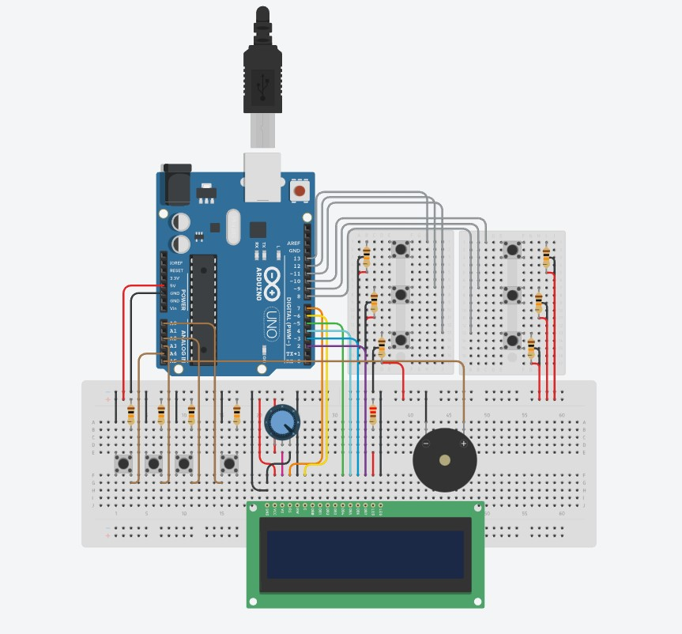
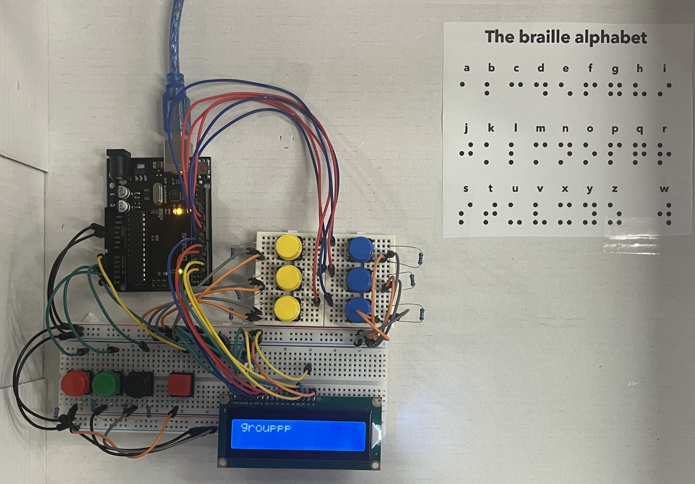

Course: TECH 117 (Computer Engineering Technology, Fall 2025)
Instructor: Ph.D. Ana Rodrigues
Group 4 - Team Members:
People with visual impairments often face significant challenges in communication. To interact with others, they rely on a tactile reading and writing system called Braille to spell out words. However, not everyone is able to read Braille. This creates a barrier between individuals with disabilities and the general population.
The proposed solution is a button-based input device connected to a display, which shows each letter as it is entered through the buttons, forming words. The prototype is build using an Arduino Uno, black/blue/green/red/yellow pushbuttons, an LCD display screen, and a passive buzzer.
The LCD displays the corresponding letters and numbers, and the Arduino processes the button inputs to trigger the appropriate buzzer signals.
The price may vary due to sales or promotions.
| Item | Qty | Unit Price (CAD) | Subtotal (CAD) | Source |
|---|---|---|---|---|
| Arduino Uno Rev3 | 1 | $5.03 | $5.03 | AliExpress |
| Pushbuttons | 10 | $0.33 | $3.27 | AliExpress |
| Passive Buzzer | 1 | $0.16 | $0.16 | AliExpress |
| LCD 16x2 | 1 | $5.24 | $5.24 | AliExpress |
| 10 kΩ Resistors | 1 | $0.04 | $0.40 | AliExpress |
| 220 Ω Resistors | 1 | $0.03 | $0.03 | AliExpress |
| 100 Ω Resistors | 1 | $0.03 | $0.03 | AliExpress |
| 10 kΩ Potentiometer | 1 | $0.40 | $0.40 | AliExpress |
| 830 pins Breadboard | 1 | $4.95 | $4.95 | AliExpress |
| 170 pins Breadboard | 2 | $1.41 | $2.82 | AliExpress |
| Jumper Wires | 1 set of 40 | $2.99 | $2.99 | AliExpress |
| Estimated Total | $25.32 | — | ||
The following image shows the assembled prototype on a breadboard.
The Arduino code controls a set of buttons, each corresponding to a specific Braille dot position and other functions. It records the user’s inputs based on these buttons' placement, stores the resulting Braille pattern, and presents the output on the LCD screen.
#include
LiquidCrystal lcd(7, 6, 5, 4, 3, 2);
// Braille dot pins (1–6)
const int braillePins[6] = {13, 12, 11, 10, 9, 8};
// Confirm button
const int redButton = A4;
// Buzzer
const int buzzer = A5;
// Previous button state (for beep)
int prevState[6] = {HIGH, HIGH, HIGH, HIGH, HIGH, HIGH};
// The latched braille pattern
byte currentPattern = 0;
String currentWord = "";
// -------------------------
// BRAILLE MAP (correct A–Z)
// -------------------------
struct BrailleEntry {
byte pattern;
char letter;
};
// Bit positions:
// bit0=dot1, bit1=dot2, bit2=dot3, bit3=dot4, bit4=dot5, bit5=dot6
BrailleEntry brailleMap[] = {
{B000001, 'a'}, // 1
{B000011, 'b'}, // 1 2
{B000101, 'c'}, // 1 4
{B001101, 'd'}, // 1 4 5
{B001001, 'e'}, // 1 5
{B000111, 'f'}, // 1 2 4
{B001111, 'g'}, // 1 2 4 5
{B001011, 'h'}, // 1 2 5
{B000110, 'i'}, // 2 4
{B001110, 'j'}, // 2 4 5
{B000101 | B000100, 'k'}, // 1 3
{B000011 | B000100, 'l'}, // 1 2 3
{B000101 | B000100, 'm'}, // 1 3 4
{B001101 | B000100, 'n'}, // 1 3 4 5
{B001001 | B000100, 'o'}, // 1 3 5
{B000111 | B000100, 'p'}, // 1 2 3 4
{B001111 | B000100, 'q'}, // 1 2 3 4 5
{B001011 | B000100, 'r'}, // 1 2 3 5
{B000110 | B000100, 's'}, // 2 3 4
{B001110 | B000100, 't'}, // 2 3 4 5
{B000001 | B000100 | B001000, 'u'}, // 1 3 6
{B000011 | B000100 | B001000, 'v'}, // 1 2 3 6
{B001110 | B001000, 'w'}, // 2 4 5 6
{B000101 | B000100 | B001000, 'x'}, // 1 3 4 6
{B001101 | B000100 | B001000, 'y'}, // 1 3 4 5 6
{B001001 | B000100 | B001000, 'z'} // 1 3 5 6
};
const int mapSize = sizeof(brailleMap) / sizeof(brailleMap[0]);
// -------------------------
// BEEPS
// -------------------------
void beep(int d) {
tone(buzzer, 1000, d);
delay(d + 20);
}
void longBeep() {
tone(buzzer, 800, 350);
delay(400);
}
// -------------------------
// READ + LATCH DOT PRESSES
// -------------------------
byte readBraillePattern() {
for (int i = 0; i < 6; i++) {
int val = digitalRead(braillePins[i]);
// Pressed (buttons use pullup logic)
if (val == LOW) {
currentPattern |= (1 << i); // LATCH the bit
if (prevState[i] == HIGH) {
Serial.print("Dot ");
Serial.print(i + 1);
Serial.println(" pressed");
tone(buzzer, 600);
delay(100);
noTone(buzzer);
}
}
prevState[i] = val;
}
return currentPattern;
}
// -------------------------
// FIND LETTER
// -------------------------
char findLetter(byte pattern) {
for (int i = 0; i < mapSize; i++) {
if (brailleMap[i].pattern == pattern) {
return brailleMap[i].letter;
}
}
return '?';
}
// -------------------------
// SETUP
// -------------------------
void setup() {
Serial.begin(9600);
for (int i = 0; i < 6; i++)
pinMode(braillePins[i], INPUT_PULLUP);
pinMode(redButton, INPUT_PULLUP);
pinMode(buzzer, OUTPUT);
lcd.begin(16, 2);
lcd.print("Braille Ready");
delay(800);
lcd.clear();
tone(buzzer, 600);
delay(100);
noTone(buzzer);
}
// -------------------------
// MAIN LOOP
// -------------------------
void loop() {
// Continuously update latched pattern
readBraillePattern();
// If red confirm button pressed:
if (digitalRead(redButton) == LOW) {
Serial.print("RED pressed, latched pattern: ");
Serial.println(currentPattern, BIN);
char letter = findLetter(currentPattern);
Serial.print("Confirmed letter: ");
Serial.println(letter);
currentWord += letter;
lcd.clear();
lcd.print(currentWord);
longBeep();
// Reset pattern for next letter
currentPattern = 0;
// Reset states so next dot press will beep
for (int i = 0; i < 6; i++) prevState[i] = HIGH;
// Wait until red button released
while (digitalRead(redButton) == LOW);
delay(150);
}
}
The system effectively demonstrates distance-based alerting using Arduino. It’s affordable, educational, and sustainable through reusable components.
The following external resources and example projects demonstrate related Arduino applications featuring tactile input buttons, buzzer, and LCD display: